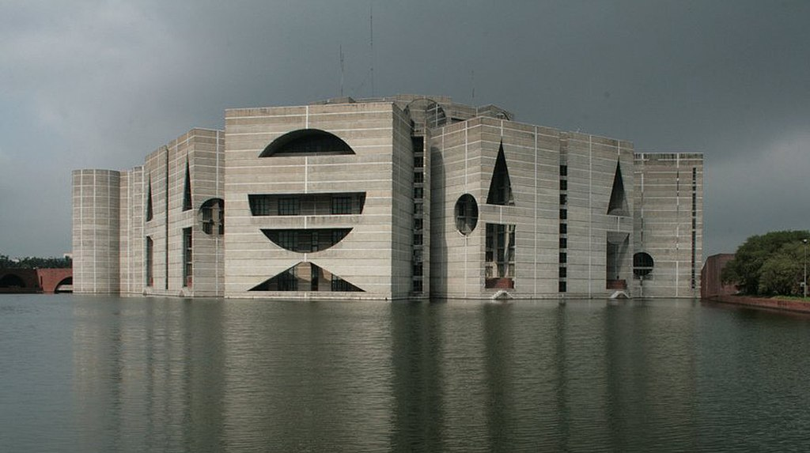

জাতীয় সংসদ ভবন
Last Updated: Jun 18, 2023
ইতিহাস
বাংলাদেশে এখন পর্যন্ত অনুষ্ঠিত এগারোটি সংসদ নির্বাচনের মধ্যে প্রথম ও দ্বিতীয় নির্বাচনের পর গঠিত সংসদের অধিবেশনগুলি অনুষ্ঠিত হয় পুরান সংসদ ভবনে, যা বর্তমানে প্রধানমন্ত্রীর কার্যালয় হিসাবে ব্যবহৃত হচ্ছে। তৎকালীন পাকিস্তান সরকার পূর্ব পাকিস্তান (বর্তমান বাংলাদেশ) ও পশ্চিম পাকিস্তানের (বর্তমান পাকিস্তান) জন্য আইনসভার জন্য জাতীয় সংসদ ভবনের নির্মাণ শুরু হয় ১৯৬১ সালে। ১৯৮২ সালের ২৮শে জানুয়ারি নির্মাণ কাজ সম্পন্ন হওয়ার পর একই বছরের ১৫ই ফেব্রুয়ারি বাংলাদেশের দ্বিতীয় সংসদের অষ্টম (এবং শেষ) অধিবেশনে প্রথম সংসদ ভবন ব্যবহৃত হয়। তখন থেকেই আইন প্রণয়ন এবং সরকারি কর্মকাণ্ড পরিচালনার মূল কেন্দ্র হিসাবে এই ভবন ব্যবহার হয়ে আসছে।
সংসদীয় ইতিহাস
বাংলাদেশে গঠিত সকল সংসদের তালিকা:
- প্রথম সংসদ: ২ বছর ৬ মাস (৭ই এপ্রিল, ১৯৭৩ - ৬ই নভেম্বর, ১৯৭৫) আওয়ামী লীগের নেতৃত্বে
- দ্বিতীয় সংসদ: ২ বছর ১১ মাস (২রা এপ্রিল, ১৯৭৯ - ২৪শে মার্চ, ১৯৮২) বাংলাদেশ জাতীয়তাবাদী দলের নেতৃত্বে
- তৃতীয় সংসদ: ১ বছর ৫ মাস (১০ই জুলাই, ১৯৮৬ - ৬ই ডিসেম্বর, ১৯৮৭) জাতীয় পার্টির নেতৃত্বে
- চতুর্থ সংসদ: ২ বছর ৭ মাস (১৫ই এপ্রিল, ১৯৮৮ - ৬ই ডিসেম্বর, ১৯৯০) জাতীয় পার্টির নেতৃত্বে
- পঞ্চম সংসদ: ৪ বছর ৮ মাস (৫ই এপ্রিল, ১৯৯১ - ২৪শে নভেম্বর, ১৯৯৫) বাংলাদেশ জাতীয়তাবাদী দলের নেতৃত্বে
- ষষ্ঠ সংসদ: ১২ দিন (১৯শে মার্চ, ১৯৯৬ - ৩০শে মার্চ, ১৯৯৬) বাংলাদেশ জাতীয়তাবাদী দলের নেতৃত্বে
- সপ্তম সংসদ: ৫ বছর (১৪ই জুলাই, ১৯৯৬ - ১৩ই জুলাই, ২০০১) আওয়ামী লীগের নেতৃত্বে
- অষ্টম সংসদ: (২৮শে অক্টোবর, ২০০১ - ২৭শে অক্টোবর, ২০০৬) বাংলাদেশ জাতীয়তাবাদী দল নেতৃত্বাধীন চার দলীয় জোটের নেতৃত্বে
- নবম সংসদ: (১৭ই জানুয়ারি, ২০০৯ - ) আওয়ামী লীগ নেতৃত্বাধীন জোট
এর মধ্যে প্রথম সংসদ কখনোই জাতীয় সংসদ ভবন ব্যবহার করেনি। প্রতিটি সংসদের নেতা ছিলেন প্রধানমন্ত্রী।
স্থাপত্যশৈলী ও নকশা
লুই কান কমপ্লেক্সের অবশিষ্ট অংশের ডিজাইন করেন। জাতীয় সংসদ ভবন জাতীয় সংসদ কমপ্লেক্সের একটি অংশ। কমপ্লেক্সের মধ্যে আরো আছে সুদৃশ্য বাগান, কৃত্রিম হ্রদ এবং সংসদ সদস্যদের আবাসস্থল।
অবস্থান
ঢাকার শেরেবাংলা নগরে অবস্থিত জাতীয় সংসদ কমপ্লেক্সকে ঘিরে রয়েছে চারটি প্রধান সড়ক:
উত্তর দিকে লেক রোড
পূর্ব দিকে রোকেয়া সরণী
দক্ষিণ দিকে মানিক মিয়া এভিনিউ
পশ্চিম দিকে মিরপুর সড়ক
ফলে সংসদ অধিবেশন চলাকালে যানবাহন চলাচল ও সহজে চলাচল নিয়ন্ত্রণ করা সম্ভবপর হয়। মূল ভবনটি (সংসদ ভবন) মূলতঃ তিন ভাগে বিভক্ত:
মূল প্লাজা : ৮২৩,০০০ বর্গফুট (৭৬,০০০ বর্গমিটার)
দক্ষিণ প্লাজা : ২২৩,০০০ বর্গফুট (২১,০০০ বর্গমিটার)
রাষ্ট্রপতি প্লাজা : ৬৫,০০০ বর্গফুট (৬,০০০ বর্গমিটার)
মূল ভবনটি কমপ্লেক্সের কেন্দ্রে অবস্থিত। এমপি হোস্টেল এবং জরুরী কাজে ব্যবহৃত ভবনসমূহ কমপ্লেক্সের বহির্ভাগে অবস্থিত। মূল ভবন ঘিরে অবস্থিত কৃত্রিম হ্রদ, দুটি বাগান এর মাঝের শূণ্যস্থান পূরণ করেছে।
আশা করি অবশ্যই আপনারা আপনাদের মূল্যবান মতামত দিবেন।